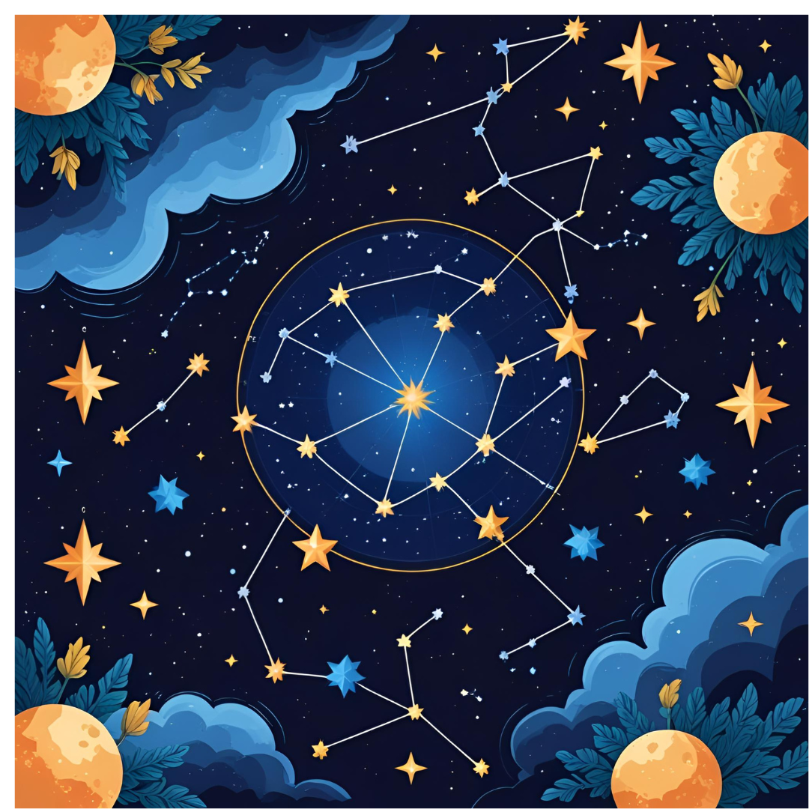

รายวิชานี้มุ่งเน้นให้ผู้เรียนมีความเข้าใจเชิงลึกเกี่ยวกับโครงสร้างและพลวัตของโลก ตลอดจนระบบสุริยะและเอกภพในภาพรวม โดยเนื้อหาครอบคลุมความรู้พื้นฐานทางธรณีวิทยา ดาราศาสตร์ และฟิสิกส์ของโลก เพื่อให้ผู้เรียนสามารถอธิบายปรากฏการณ์ธรรมชาติได้อย่างมีหลักการและเป็นระบบ
เนื้อหาของรายวิชาครอบคลุมถึงการศึกษาเกี่ยวกับการเกิดกลางวัน-กลางคืน การเปลี่ยนแปลงของฤดูกาล สุริยุปราคา จันทรุปราคา และลักษณะการเคลื่อนที่ของดวงดาวและวัตถุท้องฟ้าอื่น ๆ ผู้เรียนจะได้สำรวจและทำความเข้าใจโลกในมิติที่ลึกซึ้งขึ้น ผ่านหลักฐานเชิงวิทยาศาสตร์และการตั้งคำถามที่นำไปสู่การค้นพบองค์ความรู้ใหม่
นอกจากนี้ รายวิชายังส่งเสริมการเรียนรู้เชิงสำรวจ ผ่านการสังเกต การทดลอง และการอภิปรายในห้องเรียน เพื่อเสริมสร้างทักษะกระบวนการทางวิทยาศาสตร์ ตลอดจนกระตุ้นความสนใจและจินตนาการของผู้เรียนต่อโลกและจักรวาล ช่วยให้สามารถมองเห็นความเชื่อมโยงระหว่างธรรมชาติกับวิทยาศาสตร์อย่างเป็นระบบและลุ่มลึกยิ่งขึ้น
